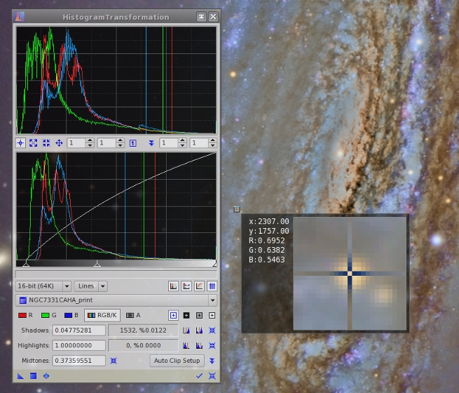
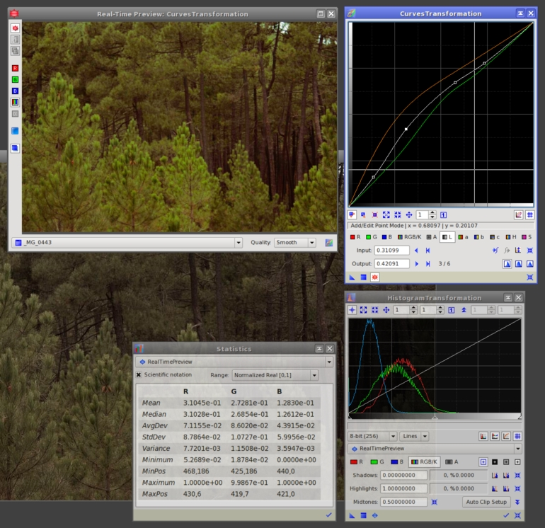

Implements pixel intensity transformations defined by histogram clipping, midtones balance and dynamic range expansion points. [more]
Categories: IntensityTransformations
Keywords: histogram, histogram transformation, intensity transformation, pixel readouts
[hide]
[hide]
A histogram is a discrete representation of the distribution of values in a data set. More graphically, a histogram divides the whole set of data points into a number of intervals and counts the number of data points pertaining to each interval. Histograms are discrete functions usually represented in the form of bar charts.
Applied to digital images, histograms are generated by remapping all possible pixel values into a (usually smaller) range of discrete values, for example 256 values in an 8-bit histogram. Each element in the histogram is an integer counter initialized to zero. Then for each pixel in the image, its value is mapped to the histogram range and the corresponding counter is incremented by one unit. The result of this operation, after applying it iteratively for all pixels, is a list of integers representing the total number of existing pixels for each histogram interval.
A histogram provides a wealth of information about an image and how its pixels are distributed throughout the available numeric range. Histograms are powerful tools for statistical image analysis, and the basis for many essential image processing techniques. We strongly recommend reading about histograms and their applications to image processing in the available literature, [1] [2] including many resources and tutorials available on the Internet.
In PixInsight, histograms and image statistics are dynamic objects: they are calculated and updated automatically by the PixInsight Core application when necessary for all views. Calculation of histogram and image statistics are highly optimized tasks implemented as multithreaded routines. Histograms and statistics are stored as temporary objects and reused when image changes are undone and redone, or when the processing histories of images are traversed in random order.
In the current versions of PixInsight, histograms are always generated with 16-bit precision (65,536 discrete values) for all image data types supported. This will change in future versions, where histograms will be generated with 20-bit resolution (1,048,576 discrete values) as an option. Histogram elements —the counts of pixels for each histogram interval— are 64-bit integers. Finally, histograms are represented, as is standard in PixInsight, in the normalized real range [0,1] where 0 corresponds to black and 1 to white for all supported data types.
A histogram transformation is a pixel-by-pixel intensity transformation defined by five parameters in PixInsight:
Clipping points
There are two clipping points, namely the shadows clipping point and the highlights clipping point. Both clipping points can take values in the whole range [0,1], with the only condition that the shadows clipping point must be less than or equal to the highlights clipping point.
The pixel clipping procedure is as follows. The set of pixels in the image whose values lie in the range defined by both clipping points are rescaled linearly to the [0,1] range, and all pixels that were initially below the shadows clipping point or above the highlights clipping point are then set to zero (black) and one (white), respectively.
Figure 1 — Pixel Clipping Example
Original image and its histogram. Note the unused portion of the available numeric range at the shadows (left side of the histogram), causing a shift of the main histogram peak toward the highlights, which results in a relatively bright background.
shadows clipping = 0.1
Shadows clipping applied to remove the unused values at the shadows, and the resulting histogram. The background is now darker and the overall contrast of the image is higher, as a result of a better usage of the available numeric range. However, note that no pixel has been clipped by carefully adjusting the shadows clipping point. Histogram clipping must always be applied with great care to prevent destruction of significant data in the shadows, where we have the most valuable —and the most difficult to acquire— part of the image in astrophotography.
shadows clipping = 0.1, highlights clipping = 0.72
An example of wrong highlights clipping causing a severe data loss. A large portion of bright pixels have been clipped to pure white. The clipped pixels can be identified as the prominent peak at the right side of the histogram. In general, you should never clip a single pixel at the highlights of an astronomical image; there's no valid reason to do so in astrophotography.
Midtones balance
This parameter defines a nonlinear function known as midtones transfer function (MTF) in PixInsight. MTF is a smooth, continuous function passing through three points: (0,0), (m,1/2) and (1,1), where m is the midtones balance parameter. A midtones balance of 0.5 defines a linear function. A midtones balance value below 0.5 increases the midtones, while a value above 0.5 darkens the midtones in the image. MTF curves are implemented as rational functions in the PixInsight/PCL framework. The formal definition of an MTF function with midtones balance parameter is given by
The above equation can be derived from the Bulirsch-Stoer algorithm [3] for evaluation of the diagonal rational function, given the three fixed data points of the MTF function. A common misunderstanding is the assumption that MTFs are gamma curves in PixInsight. Actually, rational interpolation allows for much more flexible, accurate and controllable MTF curves in PixInsight than gamma curves are in other applications.
Figure 2 — Midtones Balance Example
Original image and its histogram.
midtones balance = 0.25
Raising the midtones by applying a midtones balance adjustment below 0.5, and the resulting histogram with the nonlinear MTF curve applied. Note how the distribution of pixel values makes now better use of the available range, denoting an increase in the pixel population on the midtones.
midtones balance = 0.75
Lowering the midtones by applying a midtones balance adjustment above 0.5, and the resulting histogram with the nonlinear MTF curve applied. This is the inverse to the preceding example.
shadows clipping = 0.04, midtones balance = 0.20
Shadows clipping and midtones balance applied by a single transformation, and the resulting histogram with the nonlinear MTF curve applied. The midtones have been raised and the initial unused interval at the shadows has been removed in a single operation.
Dynamic range expansion
The dynamic range expansion lower bound parameter can vary from −10 to 0 in the standard HistogramTransformation tool, while the dynamic range expansion upper bound ranges from 1 to +11 (actually, these bounds can range from −∞ to zero and from 1 to +∞, respectively). These two parameters actually allow expansion of the unused dynamic range at both ends of the histogram. This can be probably better understood as a two-step procedure: first, the dynamic range is expanded to occupy the entire interval defined by the lower and upper bound expansion parameters, but actual pixel values are not changed. The second step is to rescale linearly both the dynamic range and all pixel values back to the normalized [0,1] range. The result of this process is that all pixel data are constrained to a smaller effective interval, and free unused portions appear at the corresponding histogram ends. This is used as a previous step for some image processing techniques, with the purpose of preserving actual pixel data from losses due to excessive contrast gains or clippings.
Figure 3 — Dynamic Range Expansion Example
The original image and its histogram.
expansion lower bound = −1.0
Expanding the dynamic range at the shadows by applying a negative dynamic range expansion lower bound value.
expansion upper bound = +2.0
Expanding the dynamic range at the highlights by applying a dynamic range expansion upper bound value greater than one.
expansion lower bound = −1.0, upper bound = +2.0
Simultaneous expansion at both bounds by combining the two preceding range expansions in a single histogram transformation.
A histogram transformation that does not modify its target image is called an identity histogram transformation. The parameters of an identity histogram transformation are the following ones:
The default parameters of the HistogramTransformation process are those of an identity histogram transformation.
[hide]
The standard histogram manipulation tool in PixInsight is HistogramTransformation. Despite a histogram is a rather simple data structure (it's only a list of integers after all), HistogramTransformation provides one of the most sophisticated user interface resources available in the set of standard PixInsight tools, reflecting the key importance of histograms in image processing.
The HistogramTransformation interface is divided into three main sections that we'll describe shortly in this document. From top to bottom, these sections are: the output histograms, the input histograms, and the parameters section. Briefly, the parameters allow you to define a histogram transformation, then you can select an image to load and inspect its current histograms on the input histograms section, and the output histograms automatically predict how the histograms of the resulting image will be after applying the transformation.
There are five sets of identical parameters available on the HistogramTransformation interface:
HistogramTransformation is a high-precision tool for histogram inspection and manipulation. It is the tool of choice for all nonlinear image stretching tasks in PixInsight.
[hide]
The input histogram panel corresponds to the current histogram functions of the target image, or the image to which the process will (or could) be applied. When a view is selected in the view selection list, its histogram functions are plotted on the input histogram panel. If histogram data are not available for the currently selected view, they are automatically calculated by the PixInsight Core application.
For RGB color images, when the combined RGB/K channel is selected and the Show Raw RGB Histograms display option is disabled, input histograms will reflect variations if changes have been made to parameters for individual RGB channels. If the raw RGB histograms option is enabled (as happens by default), input histograms don't take into account possible changes made to parameters of individual RGB channels, and the input histograms are the actual histogram functions of the selected view.
To the bottom of the input histograms panel, there is a horizontal rectangular area whose background is drawn as a gradient, ranging from pure black to pure red, green, blue or white, depending on the currently selected channel. This gradient represents the full available numeric range, and is oriented as pixel values vary for histogram functions, MTF curves, and pixel readouts.
Three small triangular controls, known as sliders, are shown ordered on this area and are associated with their respective histogram manipulation parameters, namely, from left to right: shadows clipping point, midtones balance, and highlights clipping point. You can click on any slider and drag it horizontally to change its associated parameter. Both clipping sliders can vary within the whole normalized range (from 0 to 1), with the condition that the shadows clipping point must always be less than or equal to the highlights clipping point. The midtones balance slider is limited to the interval defined by both clipping points, and can take relative values in the range from 0 to 1.
Each slider is associated to its edit control counterpart. The numeric values shown on these edit controls and the relative slider positions are mutually linked and automatically updated to ensure coherence between graphical elements and process parameter values. Clipped pixel counts and output histograms, if visible, are also automatically recalculated and updated when you move any of the three sliders.
Output histogram functions are automatically predicted for the input histogram functions, if a view is currently selected, according to the current set of histogram transformation parameters. Since output histogram functions are necessarily predicted from interpolated histogram data, in rare occasions you may find small differences between predicted values and the resulting histogram values after applying or previewing the histogram transformation.
The output histograms panel is a standard collapsible section PixInsight control. However, due to space limitations (the HistogramTransformation interface is already complex and large enough), it has no associated section bar control. You can show or hide the output histogram panel by clicking the corresponding tool button, as shown on the figure below.
The Show MTF and Show Grid display options control visibility of the MTF curve and coordinate grids, respectively. These options are covered later on this document.
As we have said in the preceding paragraphs, you can select an existing view to load and inspect its histograms with HistogramTransformation. However, remember that PixInsight is an object-oriented system where processes and images are self-contained, mutually independent objects, and HistogramTransformation, despite what it may seem at first sight, is no exception to this rule (there are really no exceptions to this rule in PixInsight). This means that the histogram functions plotted on the input and output histogram panels, as well as the clipped pixel counts, are just informative data, but they actually have nothing to do with the instance of HistogramTransformation being defined, nor they will change its behavior in any way.
Readout Mode
This is the default working mode of the HistogramTransformation interface. What you can do in this mode depends on the currently selected histogram readout mode. In the default normal histogram readout mode you can just obtain information at the current histogram cursor position on the information panel.
Zoom In Mode
HistogramTransformation allows you to inspect and navigate histogram functions with the help of magnified views. This is often necessary because histogram functions can be quite complex and intricate. Zoom factors can be selected independently for the input and output histogram panels, and also independently for the horizontal and vertical axes, from 1:1 up to 999:1. High magnification allows you to define histogram clipping points and evaluate histogram features with surgical precision.
In Zoom In mode, each time you click on a histogram panel the zoom factor is increased by one unit: 2:1, 3:1, 4:1, and so on up to 999:1, uniformly for the X and Y axes. When the zoom ratio is greater than 1:1 for a histogram panel, standard scroll bars appear automatically around it. Note that you can also zoom in/out the histograms with the mouse wheel, irrespective of the current histogram editing mode.
Zoom Out Mode
This mode works in the opposite way to Zoom In: In Zoom Out mode, each time you click on a histogram panel the zoom factor is decreased by one unit uniformly for the X and Y axes. Note that you can also zoom in/out the histograms with the mouse wheel, irrespective of the current histogram editing mode.
Pan Mode
When you are working on a zoomed histogram, the Pan mode allows you to scroll the editing area by clicking and dragging the cursor. Note that you can also use the two standard scroll bar controls that appear at the right and bottom edges of each histogram panel, when the zoom ratio is larger than 1:1. Note also that you can pan around the zoomed histograms by clicking with the middle mouse button and dragging, irrespective of the current histogram editing mode.
Zoom Factors, Input/Output Histograms
These are four spin box controls that allow you to directly enter the desired zoom factors separately for the input and output histograms, and independently for the X and Y axes. Zoom factors can range from 1:1 to 999:1.
Zoom 1:1
Click this button to reset the histogram zoom factors to the default 1:1 value, for both the input and output histograms.
Show/Hide Output Histograms
The output histogram panel is a collapsible section PixInsight control; click this button to toggle its collapsed state in order to show or hide it. The HistogramTransformation interface is much smaller with the output histogram hidden, which can be preferable when you only want to inspect the histograms of an image.
Along with the above tool buttons, when the HistogramTransformation window has the keyboard focus you can use the following keyboard commands to temporarily select a histogram editing mode:
The information panel is a read-only control that shows some information related to the current cursor position, when the cursor is over one of the histogram panels. The information given is necessarily 'compressed' to maximize usage of the available screen space, and is better understood through an example. Suppose we have the following text shown on the information panel:
The above text provides the following information:
Plot Resolution
Although histograms are always generated with 16-bit resolution by the PixInsight Core application for all supported pixel data types, the HistogramTransformation tool allows you to represent histogram functions at various interpolated resolutions, including the standard binary resolutions (6, 7, 8, 9, 10, 12, 14 and 16 bits for 64, 128, 256, 512, 1024, 4096, 16384 and 65536 discrete levels, respectively) as well as some decimal resolutions (100, 1000 and 10000 discrete levels).
On one hand, by selecting the appropriate resolution you can inspect histogram functions tightly adapted to the native bit depth of the image. On the other hand, reduced resolutions allow you to inspect simplified histogram functions that can better represent overall trends and shapes without focusing on local features. For general inspection of histogram shapes we recommend working with the default 8-bit resolution. However, to apply accurate histogram transformations, such as the initial nonlinear stretch applied to a linear raw CCD image, working at the native 16-bit histogram resolution is an absolute must.
Figure 4 — Histogram Plot Resolution
To the left, the histogram of a 32-bit floating point image, plotted with 8-bit resolution (256 levels). To the right, the same histogram plotted at the native 16-bit histogram resolution. The difference in detail representation is self-evident, especially in the zoomed view. This level of detail representation is necessary to carry out high-precision histogram manipulations, but it may be counterproductive for evaluation of the histogram's general shape and properties, where simplified representations are often desirable.
Graph Style
You can select one of the four graph styles available for plotting histogram functions, namely: lines, area, bars and dots. In the lines plotting style, histogram values are connected with solid lines. This is the default style. The area style is the same as lines, but the area below the histogram up to the X axis is filled with a solid color and drawn with a combination of logical bitmap operations to maximize visibility when several histogram areas overlap. The bars style plots vertical bars for each histogram level. The dots style draws a single dot for each histogram level. The bars and dots styles are potentially the most accurate, as they represent strictly the existing histogram values without any addition. On the other hand, lines and area are usually the most practical and visually appealing modes for histogram inspection.
When this option is enabled, the input histogram panel will plot the true histogram functions of the selected view when the currently selected channel is RGB/K, irrespective of the transformations applied to individual RGB channels. When this option is disabled, the histograms plotted for the RGB/K combined channel reflect changes made by individual RGB transformations. By default, this option is enabled.
Figure 6 — Show Raw RGB Histograms Option
Left column: individual RGB histogram functions with Autozero clipping points applied. Right column: with the Show Raw RGB option enabled (top) and disabled (bottom).
Lock Output Histogram Channel
When this option is enabled, the output histogram panel will always plot the combined RGB output histogram functions, irrespective of the current channel selection. When this option is disabled, the output histogram will adopt the current channel selection. This option is enabled by default.
Show MTF Curve
When this option is enabled, the current midtones transfer function curve (MTF) is drawn on the input histogram. This option is enabled by default.
Show Histogram Grids
When this option is enabled, both histogram panels draw rectangular grids at regular intervals. This option is enabled by default.
This is a standard view list PixInsight control that you can use to load the histograms of any view and inspect and work with them on the input and output histogram panels. The HistogramTransformation interface is a virtual view client able to work with the histograms of the real-time preview.
You must always keep in mind that the currently selected view is for informative purposes exclusively, and has actually nothing to do with the HistogramTransformation instance being defined.
The channel selection buttons allow you to select one of the five available histogram transformations for edition, as described below.
Red Channel (R)
Applied to the red channel. The red channel is the first nominal channel in RGB color images.
Green Channel (G)
Applied to the green channel. The green channel is the second nominal channel in RGB color images.
Blue Channel (B)
Applied to the blue channel. The blue channel is the third nominal channel in RGB color images.
Applied to the red, green and blue nominal channels of RGB color images, and to the gray nominal channel of monochrome grayscale images.
Alpha Channel (A)
Applied to the active alpha channel, when it exists in the target image. The active alpha channel defines image transparency in PixInsight, and is always the first channel after the nominal channels: either a fourth channel in RGB color images, or a second channel in grayscale images.
For grayscale images, only the combined RGB/K and alpha channel histogram transformations are available; other transformations, if defined, are simply ignored for grayscale images.
This section allows you to define the five parameters of each histogram transformation (one for each one of the five available channels). For the meaning and role of each parameter, please refer to the description of a histogram transformation made earlier in this document.
Shadows clipping
Allows you to directly enter the value of the shadows clipping point for the current histogram transformation.
Highlights clipping
Allows you to directly enter the value of the highlights clipping point for the current histogram transformation.
Midtones balance
Allows you to directly enter the value of the midtones balance point for the current histogram transformation.
Dynamic range expansion lower bound
Allows you to directly enter the value of the dynamic range expansion lower bound parameter for the current histogram transformation.
Dynamic range expansion upper bound
Allows you to directly enter the value of the dynamic range expansion upper bound parameter for the current histogram transformation.
Reset parameters
For each histogram transformation parameter, there is a specific reset button that allows you to quickly reset it to its default value. The default values of all histogram transformation parameters are those of an identity histogram transformation.
Show/hide dynamic range expansion
The dynamic range expansion parameters are included in a collapsible section PixInsight control; click this button to toggle its collapsed state in order to show or hide dynamic range expansion parameters. As these parameters are normally not used, they are not visible by default, so you must click this button before using them.
When a view is selected for histogram inspection, these two read-only controls provide information about the number of pixel samples currently being clipped as a result of the shadows and highlights clipping points defined for the currently selected transformation. The total number of clipped samples and the corresponding percentages of the total samples in the current channel of the selected image are shown. These numbers are automatically recalculated and updated when the relevant parameters are modified, either directly through the controls available in the histogram parameters section, or by dragging the associated slider controls on the input histogram panel.
When the combined RGB/K channel is selected, the clipping counts correspond to the sum of all clipped samples in the three nominal RGB channels, resulting from applying the RGB/K transformation. For this reason the counts can reach a maximum of a 300 percent for the RGB/K transformation applied to color images.
HistogramTransformation provides a number of useful functions to perform automatic clipping of pixels at the shadows and highlights, based on the properties of the histogram functions of the currently selected view.
Autozero Shadows
Click this button to set the current shadows clipping point to the maximum possible value such that no pixel will be clipped at the shadows. This function is useful to remove a unused initial segment of the available dynamic range. When the current channel is RGB/K, the autozero shadows clipping is applied to the individual RGB channel transformations.
Autozero Highlights
Click this button to set the current highlights clipping point to the minimum possible value such that no pixel will be clipped at the highlights. This function is useful to remove a unused trailing segment of the available dynamic range. When the current channel is RGB/K, the autozero highlights clipping is applied to the individual RGB channel transformations.
Autoclip Shadows
Click this button to apply the currently defined automatic shadows clipping. The automatic shadows clipping value defines a percentage of the total pixels that will be clipped automatically at the shadows when this button is activated. The default value clips a 1% of the total pixel samples for the current channel. When the current channel is RGB/K, the automatic shadows clipping is applied to the individual RGB channel transformations.
Autoclip Highlights
Click this button to apply the currently defined automatic highlights clipping. The automatic highlights clipping value defines a percentage of the total pixels that will be clipped automatically at the highlights when this button is activated. The default value clips a 1% of the total pixel samples for the current channel. When the current channel is RGB/K, the automatic highlights clipping is applied to the individual RGB channel transformations.
Autoclip Parameters
Click this button to open the Histogram Auto Clipping Setup dialog (see figure below).
On this dialog you can define the percentages of pixels that will be clipped by the shadows and highlights Autoclip functions.
Note— Applying automatic histogram clippings based on percentages of pixels to astronomical images (and, in general, to images with a documentary value) is a conceptual error. Always work out your histogram transformations to avoid clipping significant data. In general, this requires careful manual intervention.
The PixInsight Core application generates pixel readouts when you click on an image in readout mode, which is the default working mode for all images (you know the readout mode is active because the image cursor is a simple crosshair). Pixel readouts are sampled pixel values at the current cursor coordinates, and their generation is controlled through a set of readout options that you can define with the ReadoutOptions tool. Pixel readouts are broadcasted to all process interfaces that can receive them; HistogramTransformation is one of those tools.
When HistogramTransformation receives pixel readouts, it represents the readout sample values on its input and output histogram graphs as vertical lines. Each line is plotted at a constant X coordinate equal to the corresponding readout value in the normalized [0,1] range, with a color representative of the sampled image channel, depending on the currently selected channel.
The way HistogramTransformation responds to pixel readouts depends on its currently selected histogram readout mode. HistogramTransformation's readout mode —not to be confused with the readout mode of image views— can be selected with a set of dedicated tool buttons, as shown on the figure below.
Normal Histogram Readout Mode
In this mode HistogramTransformation draws vertical lines corresponding to incoming pixel readouts, as explained above, but it does not change histogram transformation parameters.
Figure 7 — Normal Histogram Readout Mode
The HistogramTransformation tool is receiving pixel readouts from a RGB color image in normal histogram readout mode. Readout values are plotted as vertical lines at the corresponding normalized X coordinates. Note that the vertical lines plotted on the output histogram panel take into account the current histogram transformations; for example, in this case a midtones transfer function is being applied, which causes the vertical lines to shift toward the highlights side of the output histogram.
Black Point Histogram Readout Mode
In the black point histogram readout mode, pixel readout values are used to set the shadows clipping points for individual RGB channels, when the selected view is a color image, or for the RGB/K combined channel, if the view is a grayscale image.
Midtones Histogram Readout Mode
In the midtones histogram readout mode, pixel readout values are used to set the midtones balance parameters for individual RGB channels, when the selected view is a color image, or for the RGB/K combined channel, if the view is a grayscale image.
White Point Histogram Readout Mode
In the white point histogram readout mode, pixel readout values are used to set the highlights clipping points for individual RGB channels, when the selected view is a color image, or for the RGB/K combined channel, if the view is a grayscale image.
The standard ScreenTransferFunction and HistogramTransformation processes can share instances. This is possible because both tools actually work with very similar parameters: histogram transformations defined by two clipping points (shadows and highlights) and a midtones balance value.
You can drag a STF instance to the control bar of the HistogramTransformation tool window, and the HistogramTransformation tool will import its histogram parameters from the STF instance. When the STF instance defines the same parameters for the three RGB channels, HistogramTransformation will import them in its RGB/K combined transformation. Otherwise each set of STF parameters is imported in its corresponding channel-specific transformation of HistogramTransformation. The reverse operation, that is importing a HistogramTransformation instance in ScreenTransferFunction, is also possible and works in a similar way.
In PixInsight, a virtual view is a special object that is not an image, but behaves as such to some extent. A virtual view shares some properties of actual views by emulating them in such a way that they are almost indistinguishable from true views, as they are seen by some tools. A useful virtual view is the real-time virtual view. Thanks to the virtual views mechanism, some tools are able to select the real-time virtual view and work with some of its properties just as if it were a regular image. HistogramTransformation is one of these tools, also known as virtual view clients.
When the standard Real-Time Preview interface is visible, you can select the real-time virtual view as RealTimePreview with HistogramTransformation's view selector. The figure below shows an example of the kind of workflows you can implement with virtual views in PixInsight.
Figure 9 — Working with the Real-Time Virtual View
In this example, the CurvesTransformation tool owns the standard Real-Time Preview interface. The user is working on some curves and previewing the result on the real-time preview, which is a quite usual workflow in PixInsight. However, note that the HistogramTransformation and Statistics tools are also present, and they have the RealTimePreview virtual view selected in their respective interfaces. As soon as the user moves one of the curve points, the following happens automatically:
In this example, the user is able not only to preview the result of a process (CurvesTransformation in this case), but to preview also how the histograms and the statistical properties of the image will be after applying the process, all in a fully automatic way.
[1] Rafael C González & Richard E. Woods (2008), Digital Image Processing, Third Edition, Pearson Prentice Hall, § 3.3.
[2] John C. Russ (2007), The Image Processing Handbook, Fifth Edition, CRC Press, Chapter 5.
[3] R. Bulirsch, J. Stoer et al. (2010), Introduction to Numerical Analysis, Third Edition, Springer, § 2.2
Copyright © 2011 Pleiades Astrophoto. All Rights Reserved.